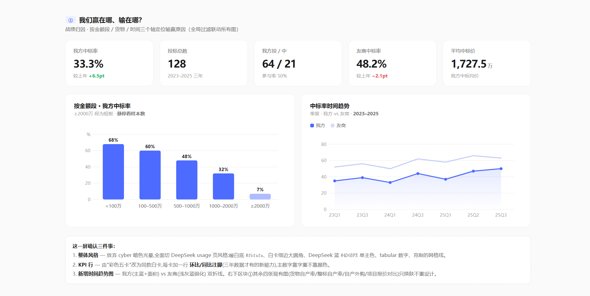
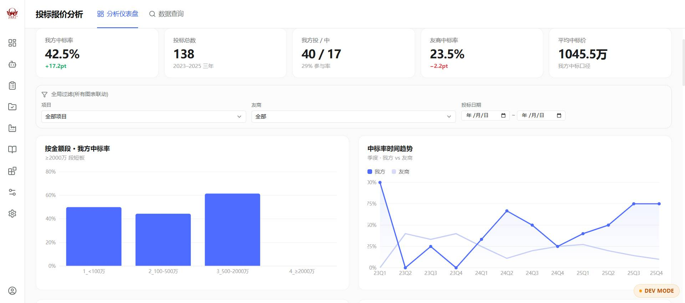
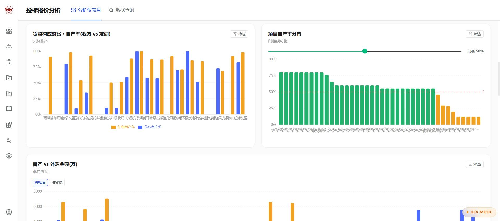
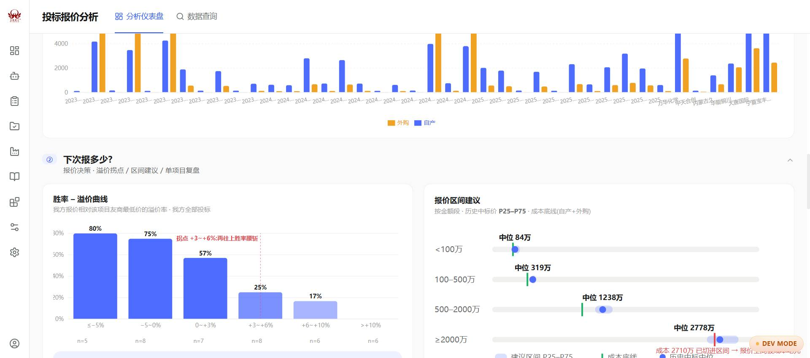
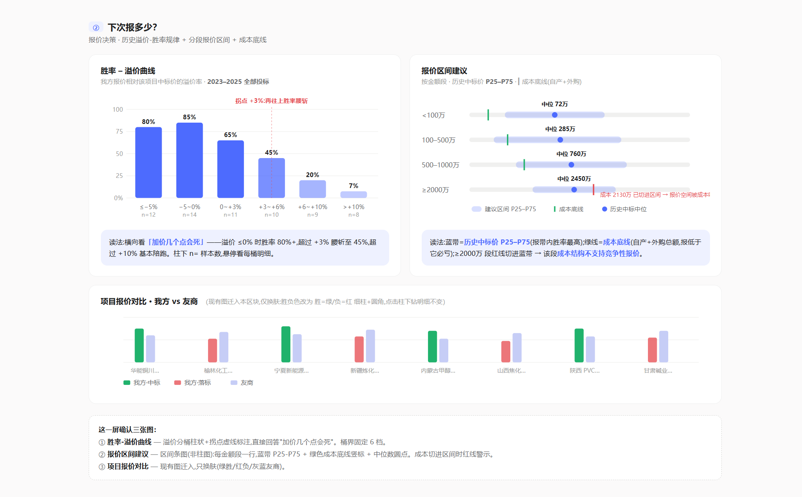
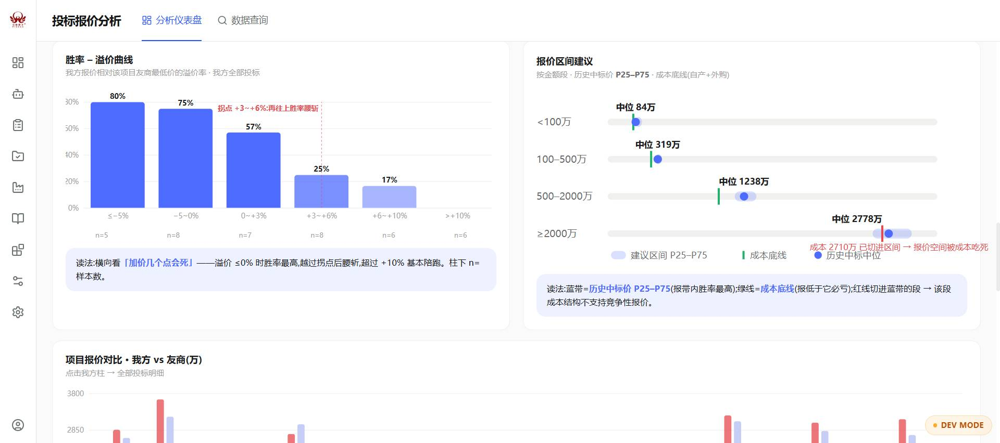
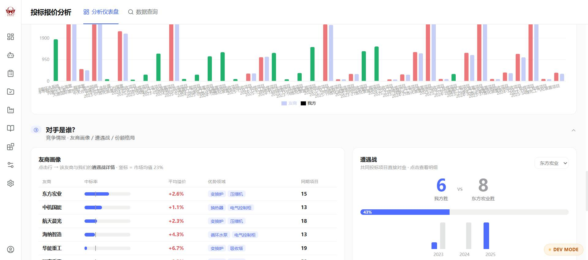
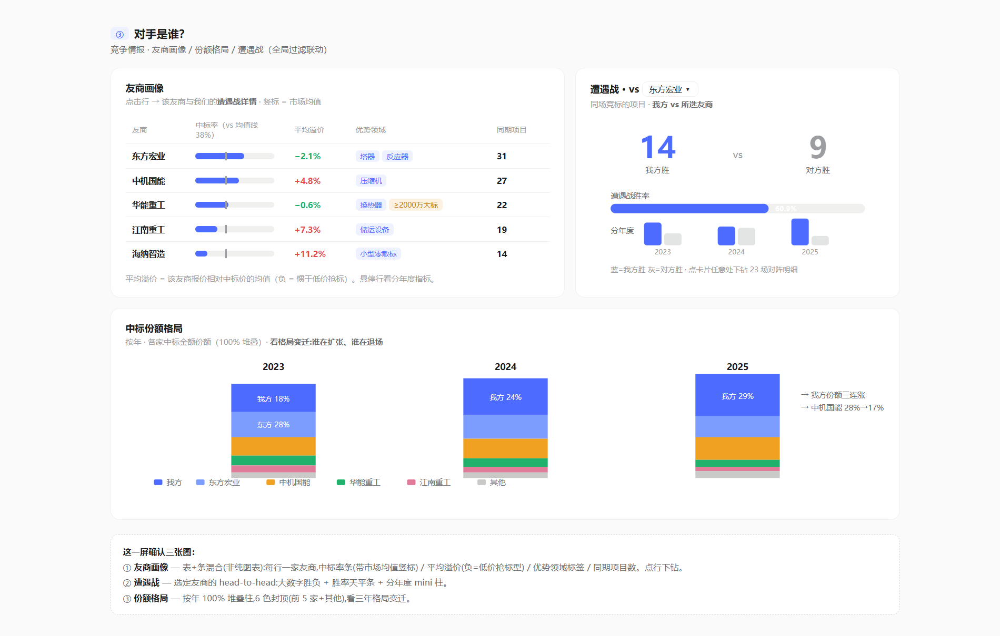
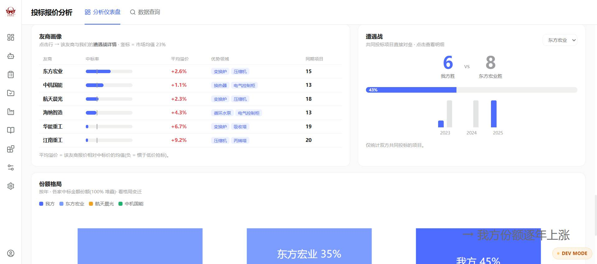
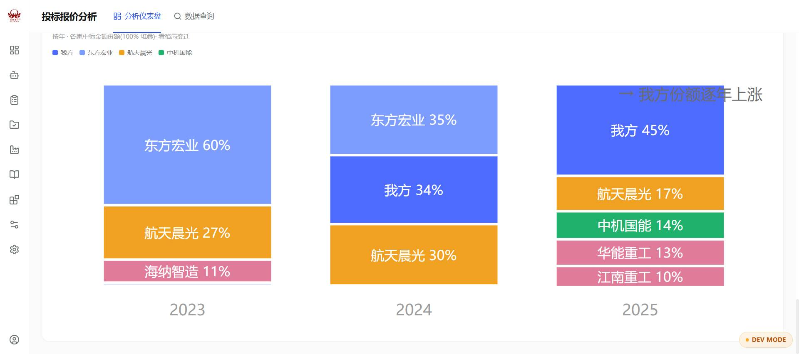

★ 份额格局（对齐后） 原型 图C实现 图12
按用户要求已对齐原型的 9 处样式:标题/meta 尾部加粗、图例沉底(我方+前4友商)、年份标签置顶加粗、我方段固定置顶、段间无缝、高段白字标签、末列右侧双行注解(我方连涨+最大退场友商)、几何与配色按原型。注:「→ 东方宏业 60%→0%」为真实数据(该友商 2025 年 0 中标,psql 已核)。
① 我们赢在哪、输在哪？ 战绩归因 原型 6 图实现 6 图
KPI 行（中标率/同比、投标总数、投中、友商中标率、平均中标价）+ 按金额段中标率 + 季度趋势 + 货物自产率 + 项目自产率 + 自产 vs 外购
原型 block1-overview

实现（3 块连续截图）



② 下次报多少？ 报价决策 原型 3 图实现 3 图
胜率–溢价曲线（6 桶 + 拐点标注 + n= 样本）+ 报价区间建议（P25–P75 蓝带 + 成本底线绿线）+ 项目报价对比
原型 block2-pricing

实现（2 块连续截图）


③ 对手是谁？ 竞争情报 原型 3 图实现 3 图
友商画像表（竖标 = 市场均值）+ 遭遇战 head-to-head（按年对垒）+ 份额格局（100% 堆叠）
原型 block3-competitors

实现（2 块连续截图）


已知偏差（数据层，非 UI 层）：
1. 友商画像表中「东方宏业 · 平均溢价」实现为 +2.6%，原型为 −2.1% —— 已修复：调整 seed（LOW_BALL_K_GEN=0.94 / LOW_BALL_K_HAND=0.875）后实现页现为 −2.1%，与原型低价抢标人设一致（bug-1217，pytest 已锁定区间）。
2. 两列数值整体不同属预期：原型为手写示例数据，实现为 40 项目确定性 seed 数据，看版式 / 配色 / 标注样式是否还原即可。
3. 实现页顶部有全局筛选行（项目 / 友商 / 投标日期）与折叠交互——原型静态页未展示交互态，属功能层新增。